公式番組「サカつくTV #8」で発表されたVer2.0大型アップデート情報を、攻略サイト向けに整理しました。
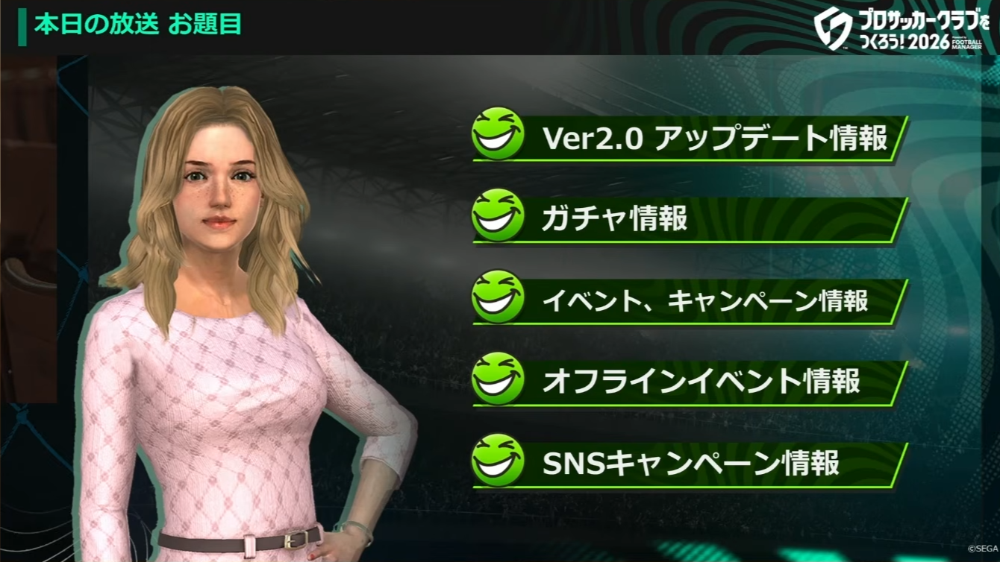
結論：Ver2.0は、単なるロスター更新ではなく、サカつくモードの育成効率・リーグ選択・フォーメーション環境・選手入手機会まで大きく変わるアップデートです。
- MLS・Kリーグ2が追加され、選手・リーグ・ミッションの幅が拡大
- 日本代表公式ライセンス取得でキービジュアルも更新
- 新プレースタイル3種と新フォメコン4種が追加
- 監督ノートで攻略TIPSをゲーム内から確認可能に
- デイリー/ウィークリーミッション更新でJ・Kリーグ選手の入手機会が増加
- Ver2.0アップデートの重要ポイント
- 新リーグ・新クラブ・新プレースタイルの内容
- 育成環境やフォメコン環境がどう変わるか
- 新ガチャ・パック・キャンペーン情報
- 攻略サイト運営目線で更新が必要になりそうなポイント
Ver2.0アップデート情報まとめ
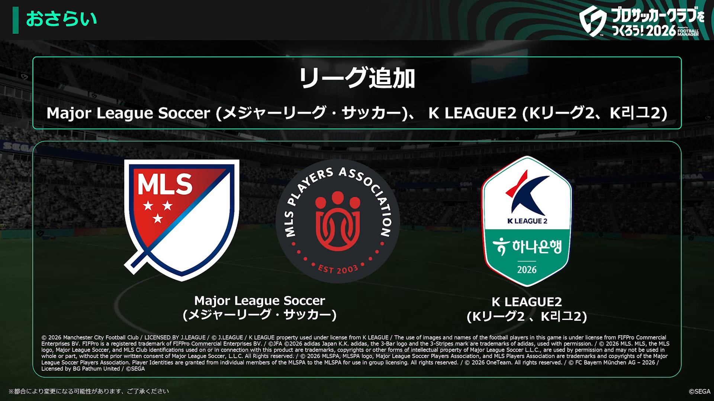
Ver2.0の大きな目玉は、Major League Soccer（MLS）とK LEAGUE2の追加です。 番組内では、MLSについて「東西に分かれたリーグ構造やプレーオフなど、特殊なレギュレーションをできる限り再現している」と説明されました。
これにより、単に所属選手が増えるだけではなく、サカつくモードの攻略対象リーグやミッション、スカウト対象の幅も広がります。 特にMLSは有名選手の実装にもつながるため、ガチャ面・育成面の両方で注目度が高いアップデートです。
MLS公式ライセンス
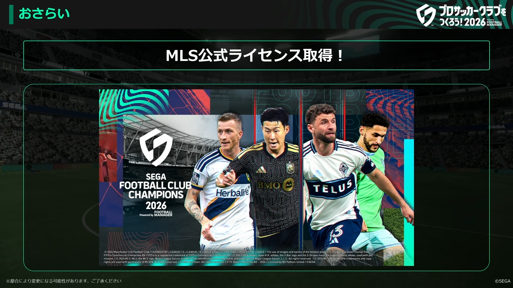
海外版のキービジュアルにもMLS選手が登場。MLS実装記念SP選手スカウトも発表されました。
日本代表公式ライセンス
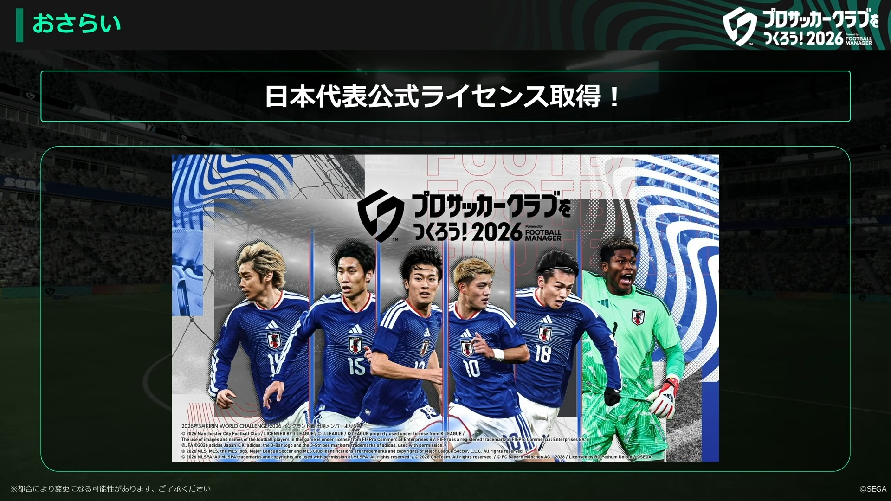
日本版では日本代表の新キービジュアルが展開。日本代表選手の存在感がさらに強まりそうです。
新機能：監督ノート（攻略TIPS）が実装
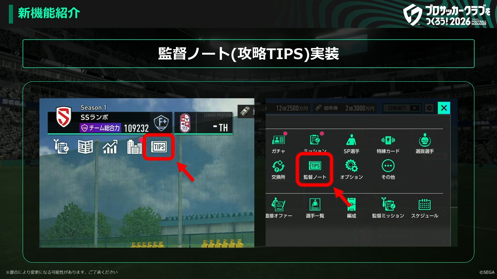
新機能として監督ノートが実装されます。 サカつくモードのトップ画面やショートカットメニューから確認できる攻略TIPSで、ゲーム内の各要素を項目別に読み返せる機能です。
チュートリアル中に流してしまった説明や、試合中の仕様、スキルコンボなど、後から確認したい情報をゲーム内で見直せるのは大きな改善です。 初心者はもちろん、既存プレイヤーにとっても「この仕様ってどういう意味だった？」を確認できる場所として役立ちそうです。
日程進行に高速化モードが追加
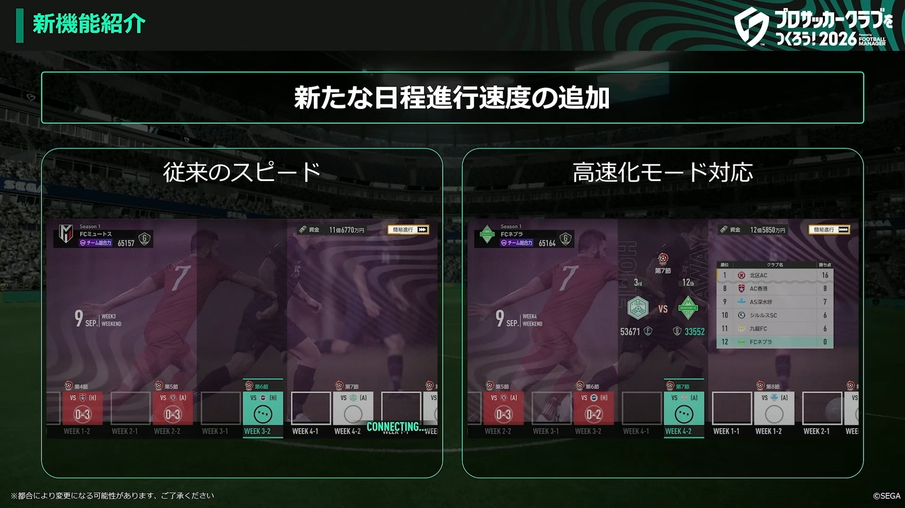
日程進行には、新たな高速化モードが追加されます。 番組内では、従来スキップ対象ではなかった優勝演出やリザルト演出もスキップ対象となり、ざっくり約1.5倍ほど早くなると説明されました。
周回育成をするプレイヤーにとって、日程進行の短縮はかなり大きいです。 端末や通信環境に左右される部分はあるものの、リーグ周回の快適性は明確に上がりそうです。
メインストーリー外伝とHistory演出が追加
メインストーリー外伝
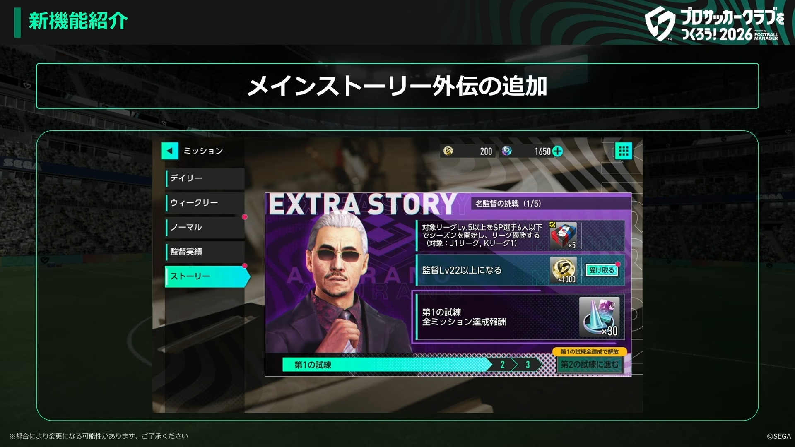
メインストーリー5章クリア後に解放される新コンテンツ。 例として、リーグLv5以上でSP選手6人以下にして優勝するような制限付きミッションが紹介されました。
History演出
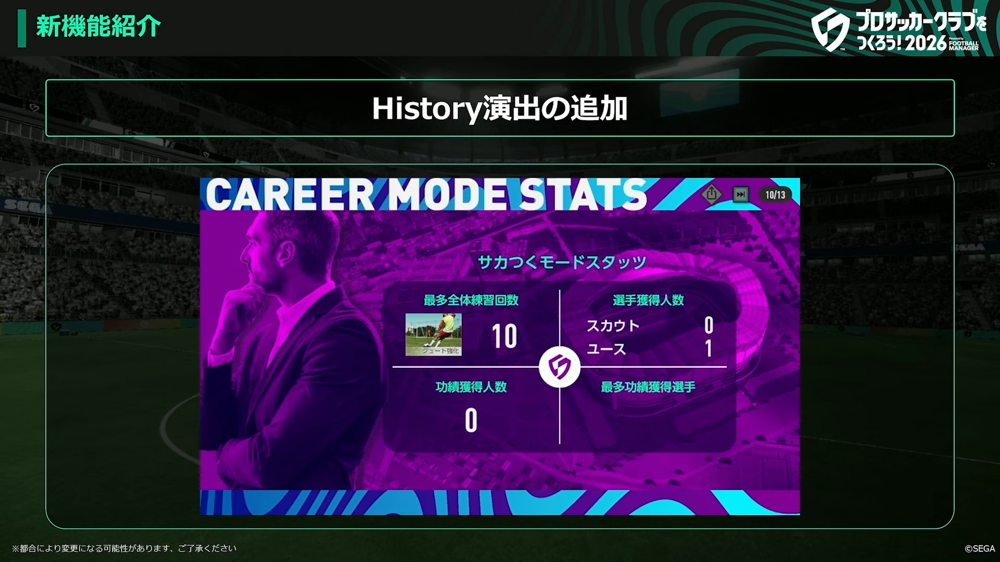
ロスターアップデート後、これまでのプレイ履歴を振り返る演出が追加。 SNSシェアにも対応し、自分の監督歴を見返せます。
サカつくモードの大型調整
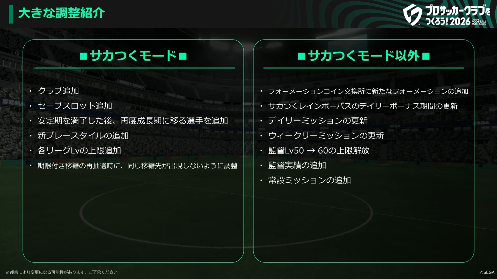
Ver2.0では、サカつくモード内外で多くの調整が入ります。 特に重要なのは、クラブ追加、成長タイプ追加、新プレースタイル、リーグLv上限追加、フォメコン追加、ミッション更新です。
新クラブ追加：バイエルン、BGパトゥム、レイラック滋賀
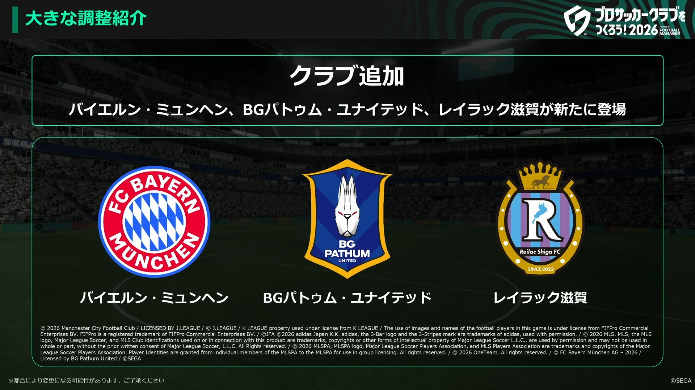
サカつくモードには、バイエルン・ミュンヘン、BGパトゥム・ユナイテッド、レイラック滋賀が新たに登場します。 なお、番組内ではマンチェスター・シティについても継続実装されると説明されていました。
安定期後に再び成長期へ移る選手が追加
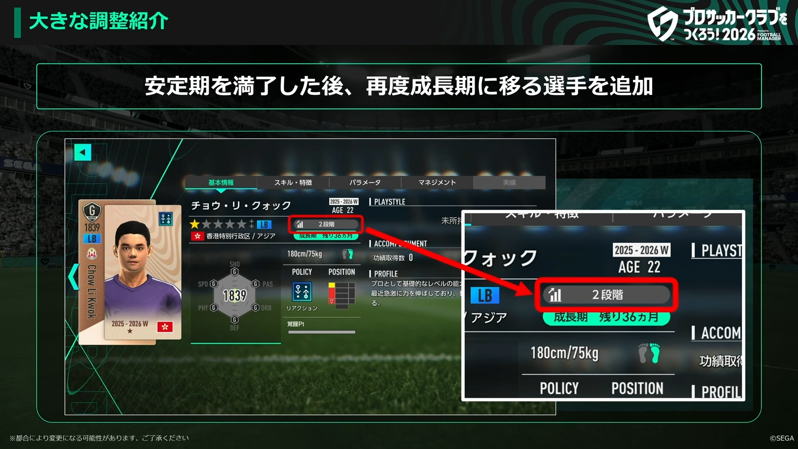
新たな成長タイプとして、安定期を挟んだ後に再び成長期へ入る選手が追加されます。 従来の選手は成長期が3年という説明でしたが、今回のタイプではそこからさらに追加で1年成長できる形になります。
まずはサカつくモード内の選手から実装し、どのような選手に実装されているか探してみてほしいそう。 フォメコン要員やプレースタイル要員として使う選手が、より長期間育成対象になる可能性があります。
新プレースタイル3種が追加
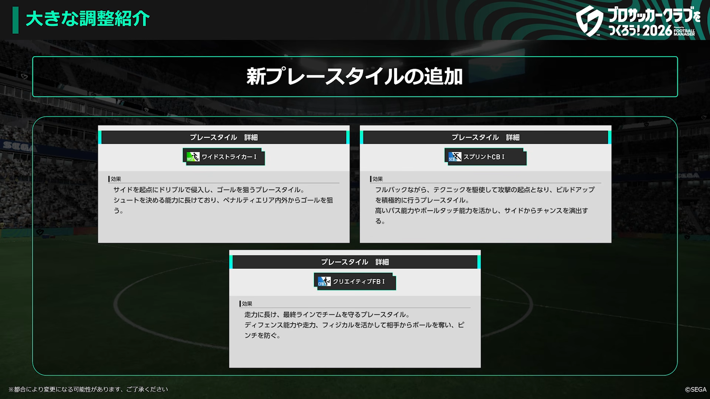
新プレースタイルとして、ワイドストライカー、スプリントCB、クリエイティブFBの3種類が追加されます。 番組では、試合中の動きや意識付けにも関わる要素として説明されていました。
攻略目線の注目点：新プレースタイルの追加により、フォメコン検索や選手評価ツール側でもデータ更新が必要になります。特にクリエイティブFBは、サイドバック系の起用幅を広げる可能性があります。
各リーグLvの上限追加で育成周回の選択肢が増える
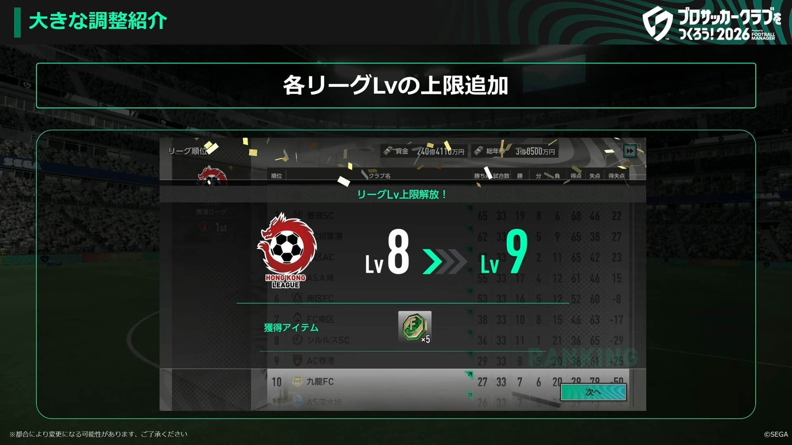
各リーグLvの上限も追加されます。 番組では、全リーグに1段階以上の追加が入り、リーグLvを上げることで試合で獲得できるパラメーター経験値が上昇するようになると説明されました。
これまでは効率面で特定リーグ周回に寄りがちでしたが、Ver2.0以降はJリーグなどでもリーグLvを上げることで育成効率を高められる可能性があります。 好きなリーグで遊びながら育成する選択肢が増えるのは、かなり良い調整です。
フォーメーションコンボ追加と3バック環境の見直し
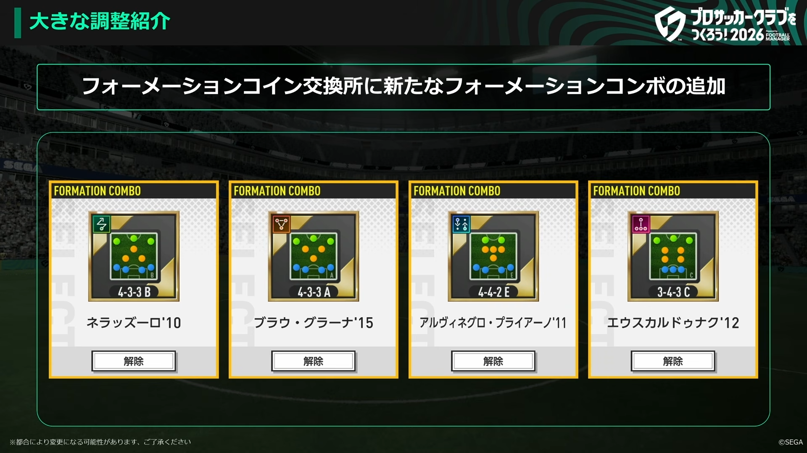
フォーメーションコイン交換所には、新たに4つのフォーメーションコンボが追加されます。 画面上では、ネラッズーロ'10、ブラウ・グラーナ'15、アルヴィネグロ・プライアーノ'11、エウスカルドゥナク'12が確認できます。
さらに番組内では、3バックに関する見直しも入ると説明されました。 これまで3バック系フォメコンを使いにくいと感じていた人も、Ver2.0後は改めて試す価値がありそうです。
デイリー・ウィークリーミッション更新
デイリーミッション
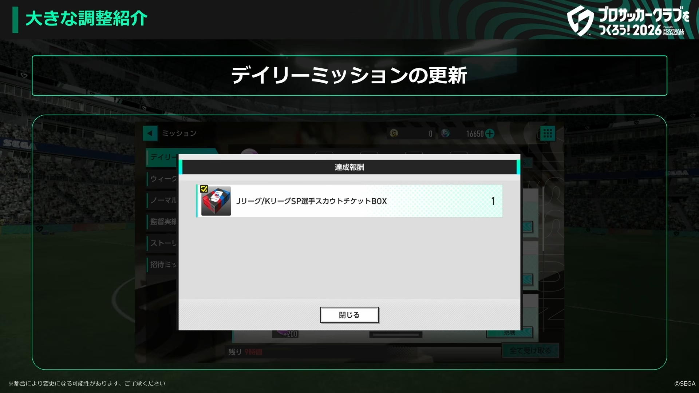
Jリーグ/KリーグのSP選手スカウトチケットBOXが毎日もらえるようになります。
ウィークリーミッション
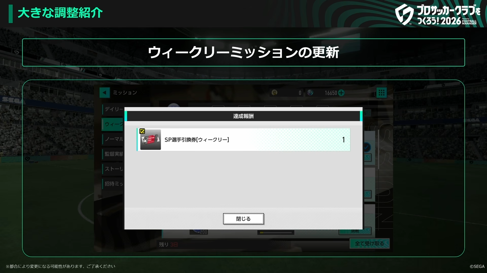
SP選手引換券が追加。毎週★3選手を選べる仕組みとして紹介されました。
特にウィークリーミッションのSP選手引換券は大きな変更です。 番組内では、1週間のウィークリーミッションで2個入手でき、同じ選手を選べば1.5週間で完凸を目指せると説明されました。（交換対象選手は★3→★4→★5の3段階強化の特別仕様との事）
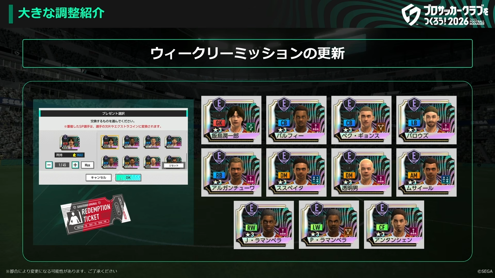
その他アップデート：説明改善・NGワード対応・SP選手ソート追加
スキル/特徴説明改修
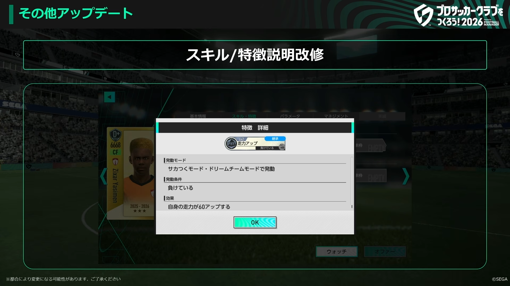
発動条件や対象ポジションなどが分かりやすくなり、スキルコンボを考えやすくなります。
MCOチャット改善
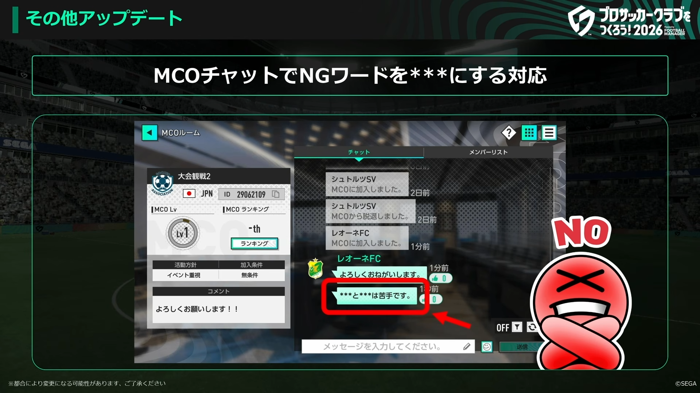
NGワードが含まれる場合、投稿不可ではなく伏せ字で投稿されるようになります。
SP選手ソート追加
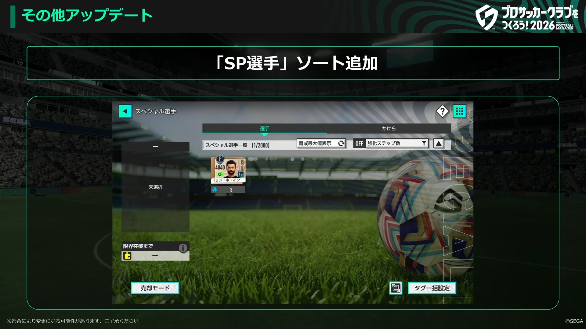
SP選手画面の使い勝手が改善され、育成最大値表示やフォメコン確認ボタンが追加されます。
ソート・絞り込み追加
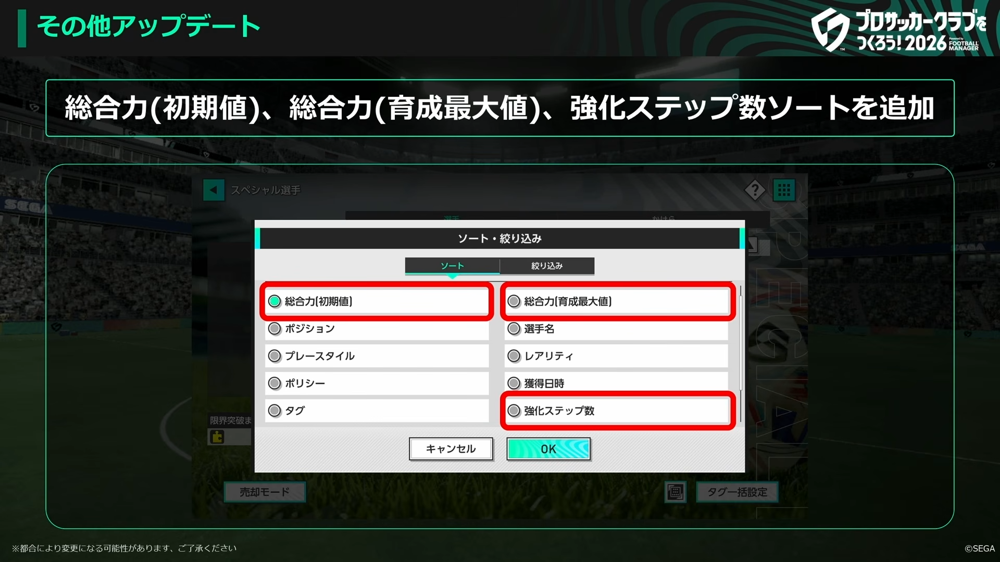
総合力初期値、総合力育成最大値、強化ステップ数などでソートできるようになります。
新ガチャ・パック情報
MLS実装記念SP選手スカウト
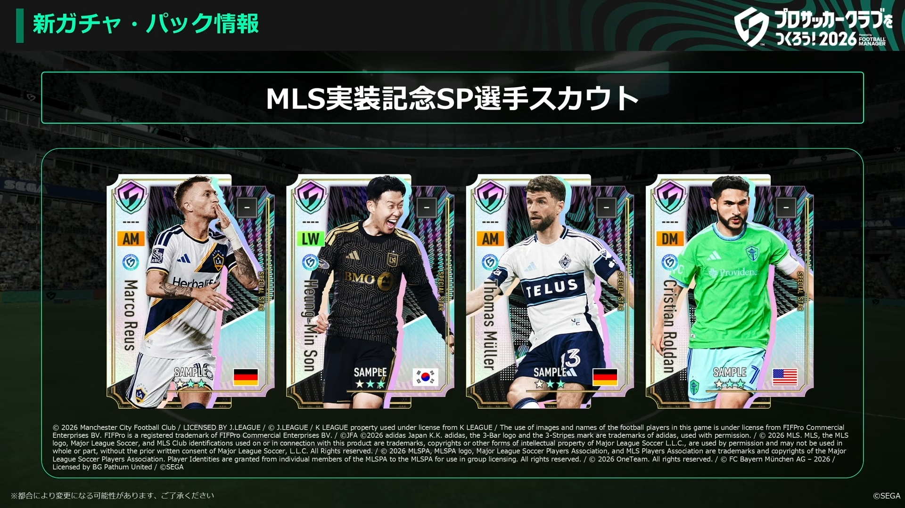
MLS実装記念SP選手スカウトでは、マルコ・ロイス、ソン・フンミン、トーマス・ミュラー、クリスチャン・ロルダンなどが紹介されました。 番組内では、ここに表示されている4人が全てではなく、追加情報も今後出る予定と説明されています。
Jリーグ/Kリーグ セレクトSP選手スカウト
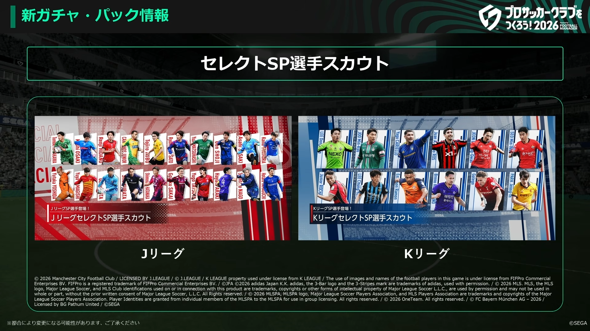
Jリーグ・KリーグのセレクトSP選手スカウトも更新されます。 ロスターアップデート後は選手内容が切り替わるため、既存メダルの扱いには注意が必要です。
番組内では、ロスター前のメダルは新しいものに変わるため、既存のJリーグスカウト/Kリーグ1スカウトのメダルは事前に使っておくよう案内されていました。
月1育成パックがリニューアル
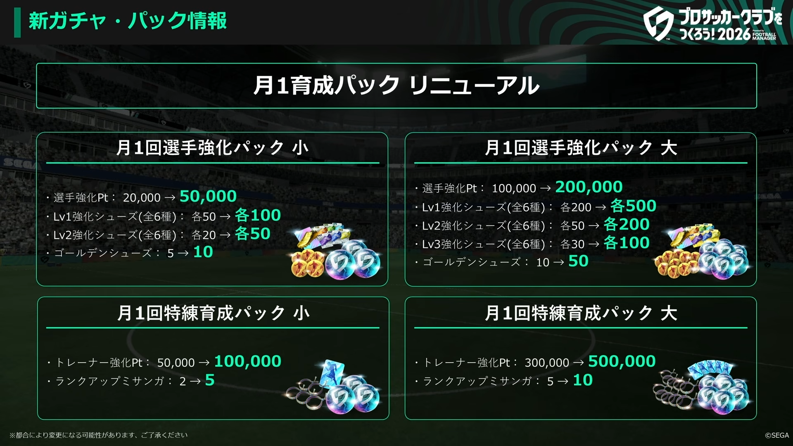
月1育成パックは内容が大幅に強化されます。 選手強化Pt、強化シューズ、ゴールデンシューズ、トレーナー強化Pt、ランクアップミサンガなどの数量が増加。 ワールドプレミアシップ報酬などの調整に合わせ、パック価値を見直す意図が説明されました。
イベント・キャンペーン情報
新ロスタースタートダッシュミッション
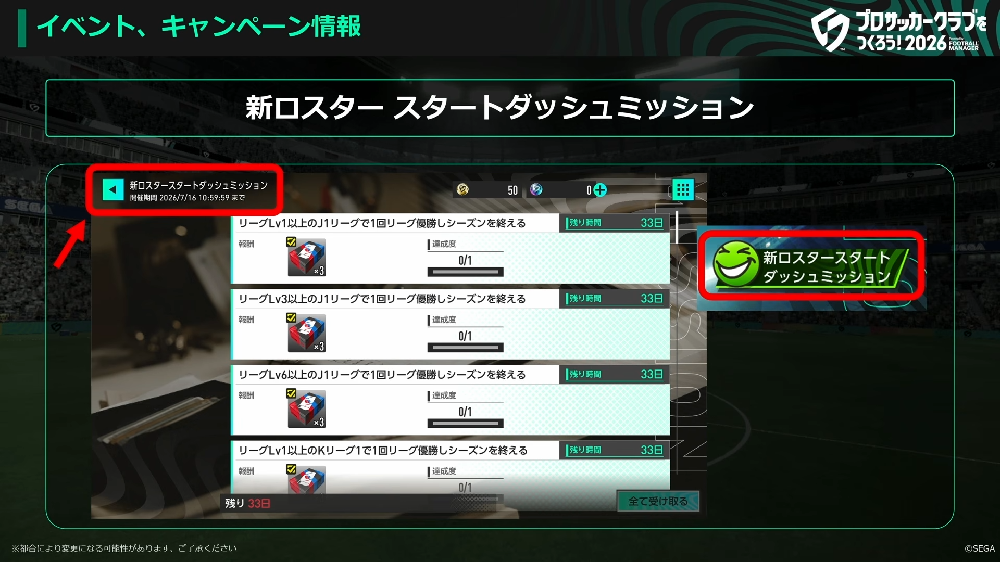
ロスターアップデート後の新シーズンに向けて、スタートダッシュミッションが開催されます。 Jリーグ/KリーグのSP選手スカウトチケットBOXを最大100個獲得できる内容として紹介されました。
特別練習カードのガチャ広告が追加
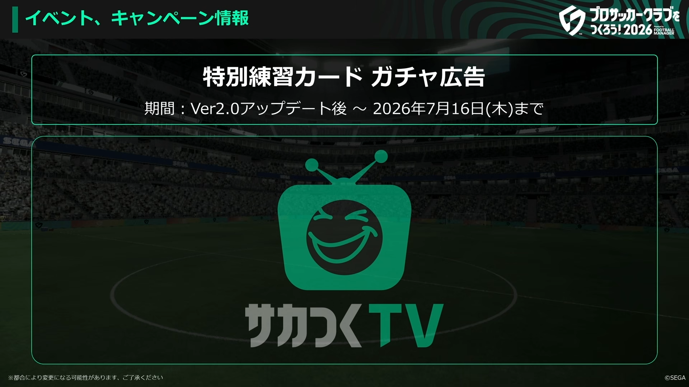
期間限定で、特別練習カードにも「広告ガチャ」が実装されます。 期間はVer2.0アップデート後から2026年7月16日（木）までと案内されました。
特連カードガチャのSSR排出率は5%なので、仮に期間中合計30回引く事ができれば、SSRが1枚以上当たる確率は約78％と非常に高いですし、広告ガチャ1回でも天井メダルを獲得する事ができます。必ず毎日ログインして神引きしましょう。
カムバックログインボーナス
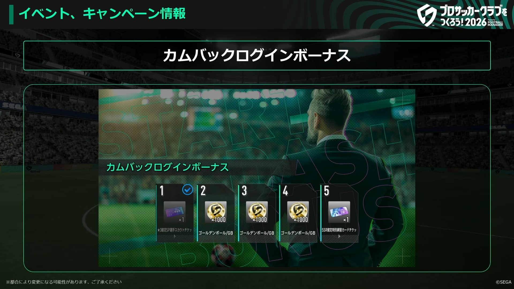
30日間ログインしていない監督向けに、カムバックログインボーナスが実施されています。 最大3000GB、★3確定SP選手スカウトチケット、SSR確定特別練習カードチケットなどが獲得可能で、これはアプデ前の現時点で受け取り可能との事です。アプデに向けて今から復帰しましょう！
公式ストアVer2.0記念キャンペーン
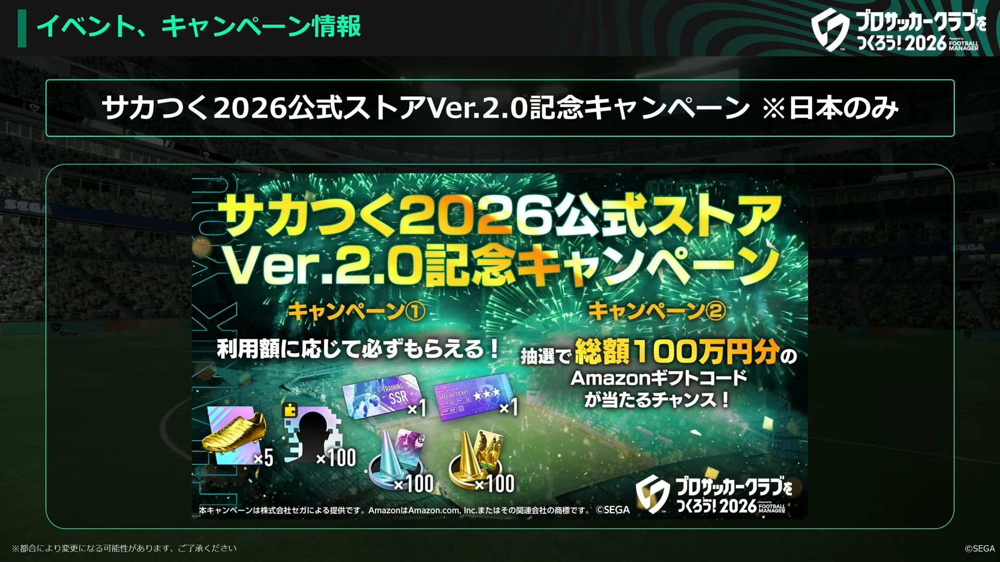
日本限定で、公式ストアのVer2.0記念キャンペーンも実施されます。 利用額に応じたゲーム内アイテムの配布に加え、抽選で総額100万円分のAmazonギフトコードが当たるキャンペーンが紹介されました。
香港レジェンド2選手の特別練習カード配布
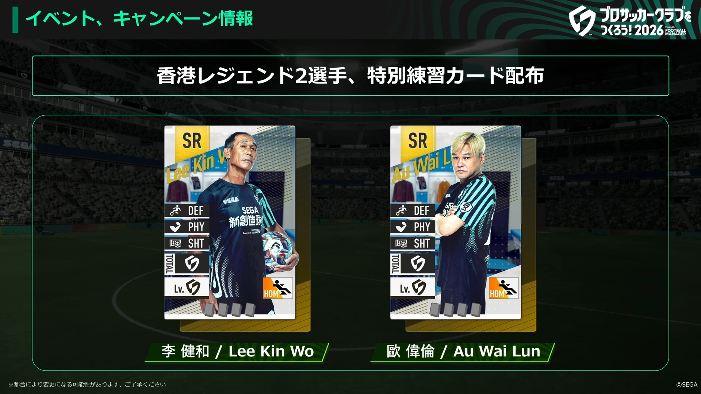
香港レジェンドとして、李 健和 / Lee Kin Wo、欧 偉倫 / Au Wai Lunの特別練習カード配布も発表されました。 日本のプレイヤーには馴染みが薄いかもしれませんが、香港サッカー界を代表する存在として紹介されています。
オフラインイベント・SNSキャンペーン情報
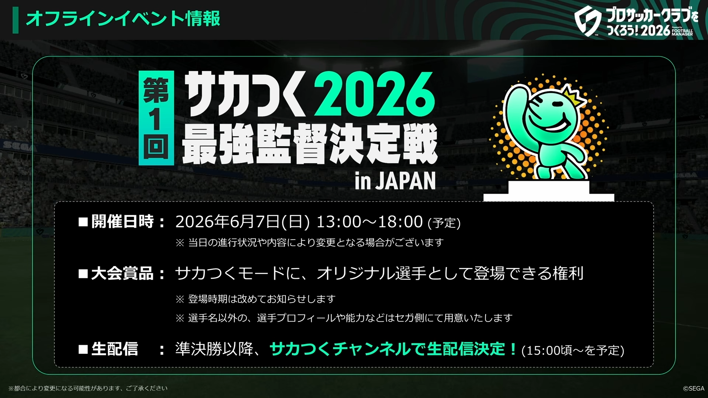
2026年6月7日（日）には、セガ大崎本社で第1回サカつく2026最強監督決定戦 in JAPANが開催されます。 準決勝以降は15時頃からサカつくチャンネルで生配信予定。 大会賞品として、サカつくモードにオリジナル選手として登場できる権利も発表されました。
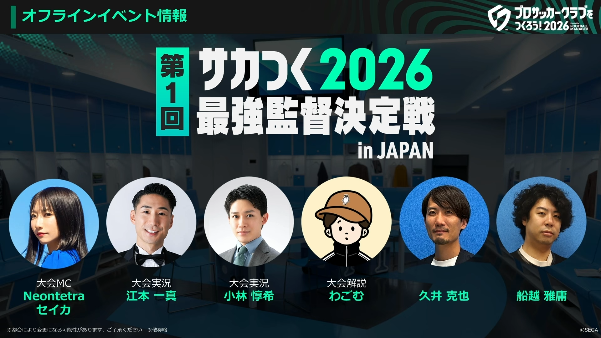
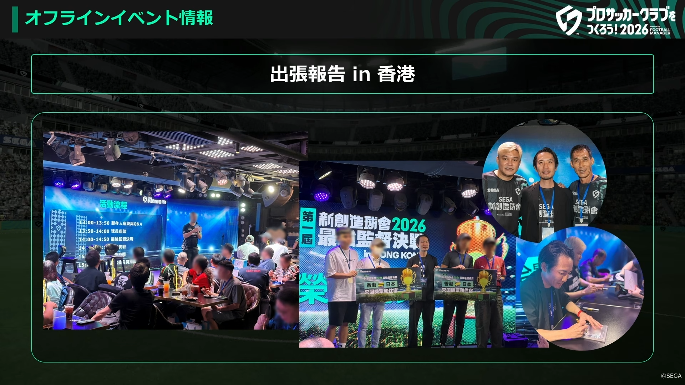
SNSキャンペーン
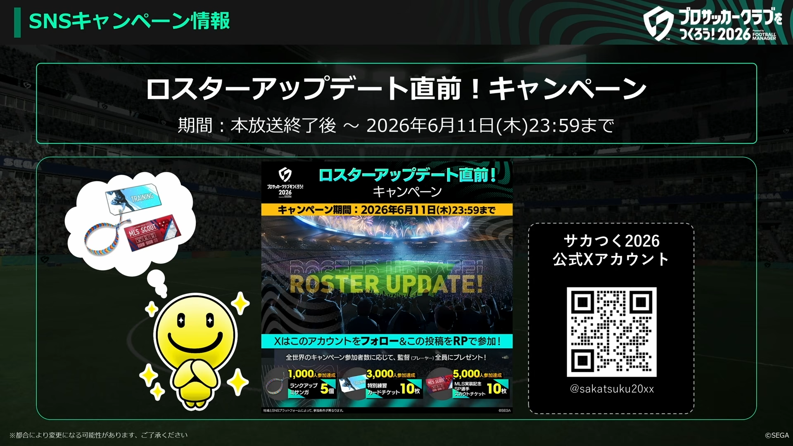
ロスターアップデート直前キャンペーンも実施。 公式Xアカウントのフォローと対象投稿のリポストで参加でき、参加人数に応じてランクアップミサンガや特別練習カードチケット、MLS実装記念SP選手スカウトチケットなどが配布される内容です。
攻略サイト目線での注目ポイント
今回のアップデートで特に重要なのは、データベース更新が必要な項目が多いことです。
- 新リーグ：MLS、Kリーグ2
- 新クラブ：バイエルン、BGパトゥム、レイラック滋賀
- 新プレースタイル：ワイドストライカー、スプリントCB、クリエイティブFB
- 新フォーメーションコンボ4種
- SP選手ソート・評価基準の変化
- J/Kリーグ選手の入手機会増加による育成優先度の変化
特にリーグLv上限追加と投資内容の見直しは、育成周回の最適解を大きく変える可能性があります。 これまで「とりあえず特定リーグを周回」だった人も、Ver2.0後はリーグLv・投資内容・育成したいポジションを見ながら周回先を選ぶ流れになりそうです。
まとめ：Ver2.0は復帰勢にも現役勢にも大きな節目
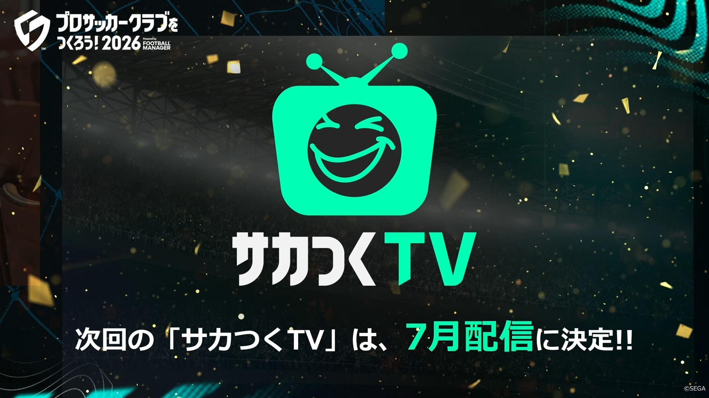
Ver2.0大型アップデートは、ロスター更新だけでなく、ゲーム全体の遊びやすさと育成環境に大きく手が入る内容です。 監督ノートや高速化モードのような快適性改善に加えて、リーグLv上限、新プレースタイル、新フォメコン、ミッション更新など、攻略面の変化も多く含まれています。
現役プレイヤーはもちろん、カムバックログインボーナスやスタートダッシュミッションもあるため、しばらく離れていた人が復帰するタイミングとしてもかなり良さそうです。 公式番組では、次回のサカつくTVは2026年7月配信予定と発表されました。
注意：この記事は公式番組の文字起こしと番組内スライドをもとに作成しています。実装時に仕様・期間・報酬内容が変更される可能性があるため、最終確認はゲーム内お知らせや公式サイトで行ってください。